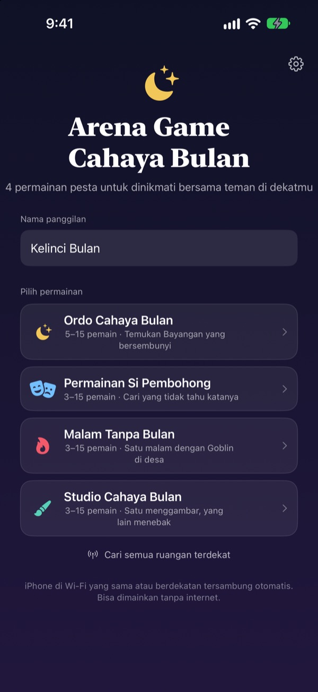
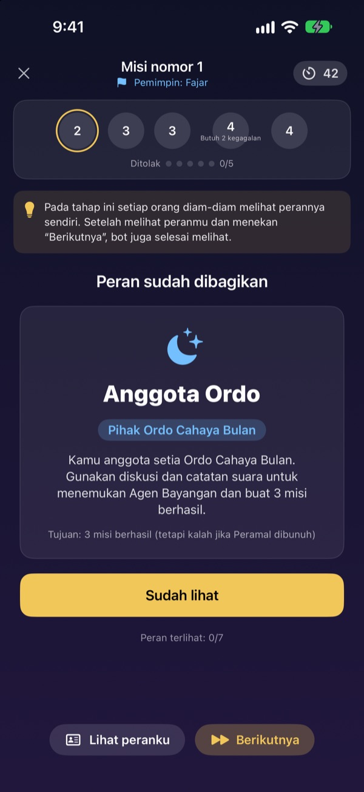
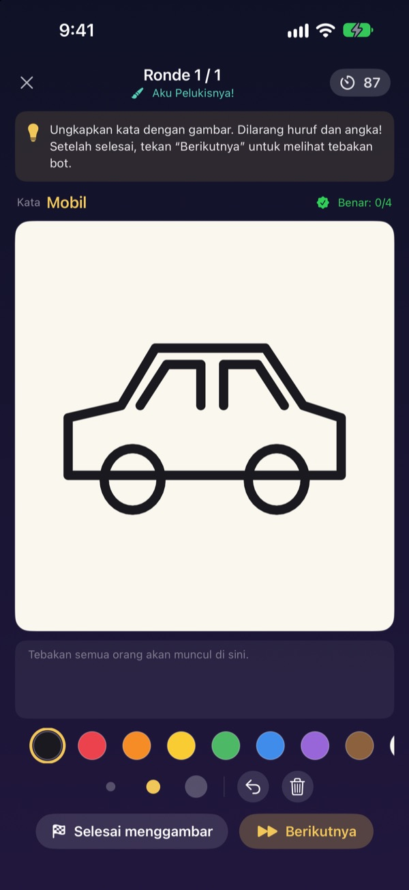
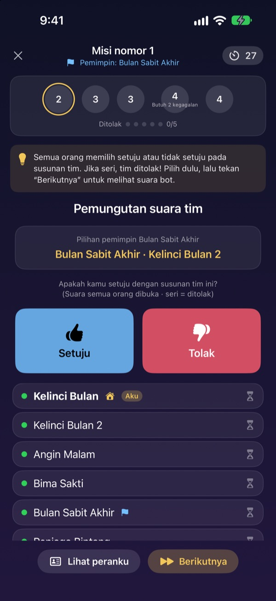

Sudah kumpul semua?
Keluarkan iPhone-nya.
Satu orang membuat ruangan, yang lain di dekatnya langsung masuk dalam hitungan detik. Peran dan kata rahasia hanya muncul di layar masing-masing, jadi tanpa kartu dan tanpa ada yang harus jadi pemandu.
Semua game gratis. Tanpa akun dan tanpa internet.

Coba satu ronde Si Pembohong
Bayangkan ada lima iPhone di meja, lalu ketuk satu per satu untuk mengintip. Cuma satu yang tidak tahu katanya. Bisa juga gantian oper layar bareng teman.
Sudah ramai, tapi bingung mau main apa
Kumpul bareng teman, liburan di vila, Lebaran sama keluarga besar. Main Werewolf berarti harus ada yang jadi pemandu dan nggak ikut main, dan kertas lipat selalu ketahuan. Di vila yang Wi-Fi-nya lemot, game online juga nggak jalan. Arena Game Cahaya Bulan membiarkan iPhone yang memandu, membagi peran, dan saling terhubung.
Peranmu cuma ada di layarmu
Begitu game mulai, tiap iPhone menerima peran atau katanya sendiri. Nggak perlu bagi kartu atau “semua tutup mata”.
Saat voting, yang terlihat cuma siapa yang sudah memilih. Siapa memilih siapa tetap rahasia sampai diumumkan.

Empat game untuk segala suasana
Adu kelihaian bicara di Permainan Si Pembohong, buru Bayangan lewat misi dan voting di Ordo Cahaya Bulan, temukan Goblin dalam satu malam di Malam Tanpa Bulan, atau satu menggambar dan yang lain menebak di Studio Cahaya Bulan.
Ordo Cahaya Bulan mulai 5 orang, yang lain mulai 3 orang, semuanya sampai 15.

Game baru? Paham dalam beberapa menit
Tiap game punya mode Cara bermain, tempat kamu main satu ronde bareng bot langkah demi langkah. Baca petunjuk di atas lalu ketuk Berikutnya.
Kalau aplikasi tertutup atau koneksi putus, ketuk Lanjutkan di layar utama dan kamu kembali ke ronde yang sama.

Mulai dalam tiga langkah
- 1
Pilih nama panggilan dan game
Semua membuka aplikasi, mengisi nama panggilan, lalu memilih game.
- 2
Buat atau gabung ruangan
Satu orang membuat ruangan, yang lain menemukannya lewat Cari ruangan terdekat.
- 3
Host memulai
Setelah semua masuk, host mengetuk Mulai permainan. Sisanya diurus aplikasi.
Empat game
- Permainan Si Pembohong · 3–15 orang
- Semua dapat kata yang sama, kecuali satu orang. Gantian menjelaskan, lalu voting untuk mencari Si Pembohong. Kalau tertangkap tapi bisa menebak katanya, Si Pembohong tetap menang.
- Ordo Cahaya Bulan · 5–15 orang
- Cari Bayangan yang bersembunyi di dalam Ordo. Pemimpin memilih tim misi, semua voting setuju atau tidak, lalu tim diam-diam memilih berhasil atau gagal. Pihak yang lebih dulu meraih tiga misi menang.
- Malam Tanpa Bulan · 3–15 orang
- Satu malam, dan ada Goblin bersembunyi di desa. Malam hari Dukun, Pencuri Malam, dan Si Usil bergerak diam-diam. Saat fajar semua berdiskusi dan hanya ada satu kali voting untuk menemukan Goblin.
- Studio Cahaya Bulan · 3–15 orang
- Satu orang menggambar kata, yang lain menebak lewat chat. Makin cepat menebak, makin besar poinnya, dan penggambar dapat poin dari setiap tebakan benar.
Semua game bisa dicoba dulu sendirian bersama bot di mode Cara bermain.
Pertanyaan umum
Ruangannya nggak kelihatan.
Pastikan host dan pemain ada di Wi-Fi yang sama atau saling berdekatan. Arena Game Cahaya Bulan harus aktif di Pengaturan ▸ Privasi & Keamanan ▸ Jaringan Lokal agar bisa menemukan perangkat di dekatmu. Menyalakan Wi-Fi dan Bluetooth sekaligus bikin koneksi paling stabil.
Harus mengizinkan akses jaringan lokal?
Ya. Dengan itu aplikasi menemukan iPhone di dekatmu dan tersambung. Kalau terlanjur menolak, nyalakan lagi di Pengaturan ▸ Privasi & Keamanan ▸ Jaringan Lokal.
Koneksi putus di tengah permainan.
Buka lagi aplikasinya dan ketuk Lanjutkan di layar utama untuk kembali ke ruangan dan ronde yang sama. Peran dan skormu masih ada. Kalau lama nggak tersambung, gabung lagi dari daftar ruangan.
Ada yang nggak merespons dan game macet.
Host bisa mengeluarkan pemain yang tidak merespons kapan saja, lalu game dihitung ulang dengan pemain yang tersisa dan lanjut. Mode host GM juga bisa melewati tahap yang macet.
Minimal berapa orang?
Ordo Cahaya Bulan butuh 5 orang. Permainan Si Pembohong, Malam Tanpa Bulan, dan Studio Cahaya Bulan bisa mulai dari 3. Semuanya sampai 15. Kurang orang? Pelajari aturannya dulu bareng bot di mode Cara bermain.
Perlu internet atau akun?
Nggak. Tanpa daftar, tanpa login, tanpa internet. iPhone yang berdekatan tersambung langsung, dan data game tidak pernah dikirim ke server.
Bisa coba main sendirian dulu?
Bisa. Pilih game, lalu Cara bermain (latihan dengan bot). Bot masuk ke ruangan dan kamu main satu ronde penuh langkah demi langkah.
Bagaimana melaporkan bug atau kirim ide?
Langsung dari aplikasi di Pengaturan (ikon roda gigi) ▸ Dukungan, atau kirim email ke alamat di bawah. Kami akan membalas secepatnya.
Laporan bug, ide, atau pertanyaan lain: kirim email ke mizzking75@gmail.com.